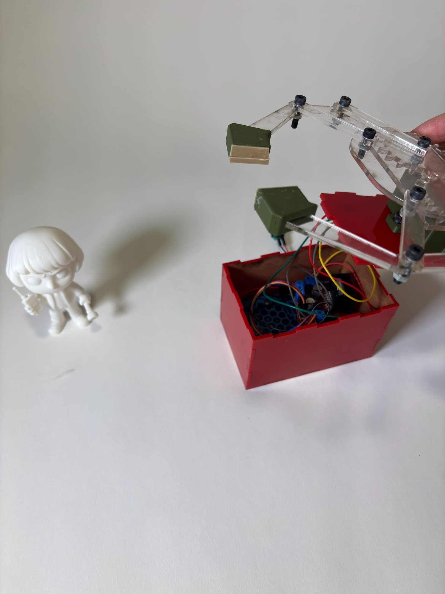
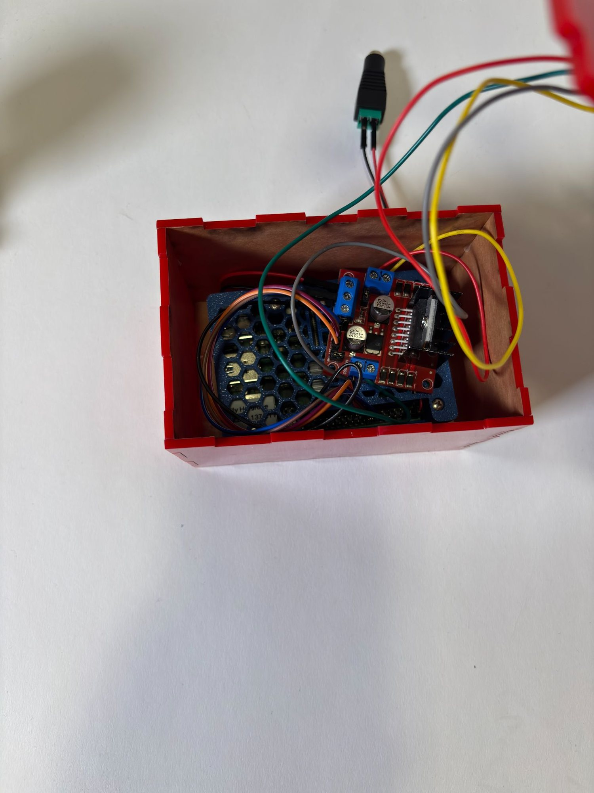
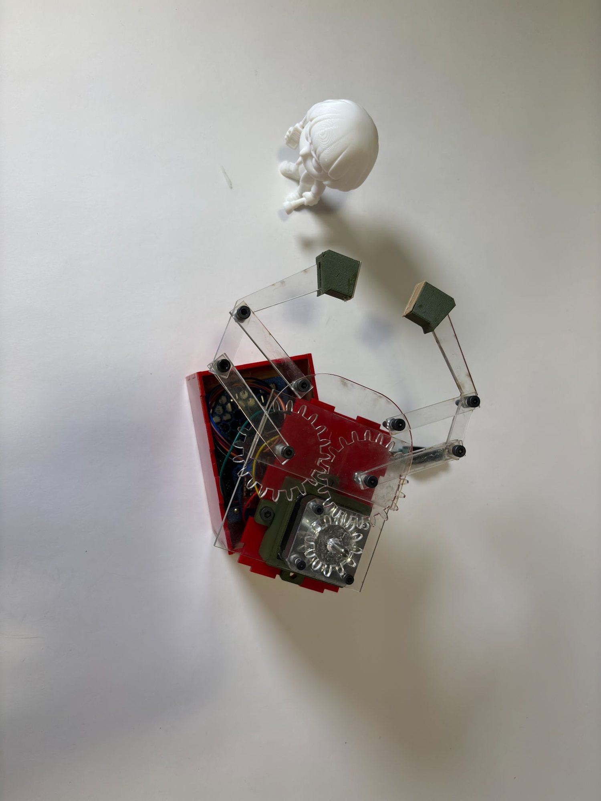
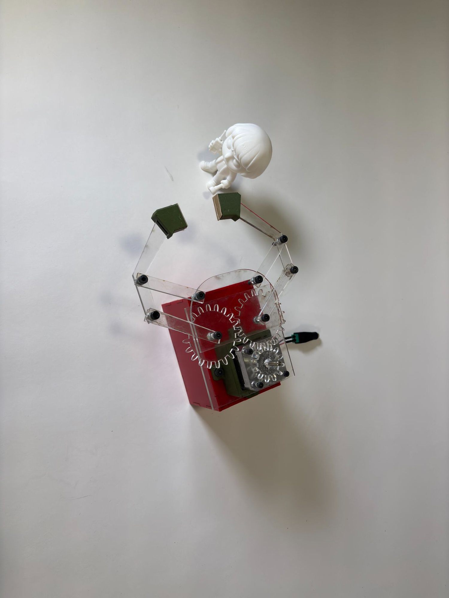
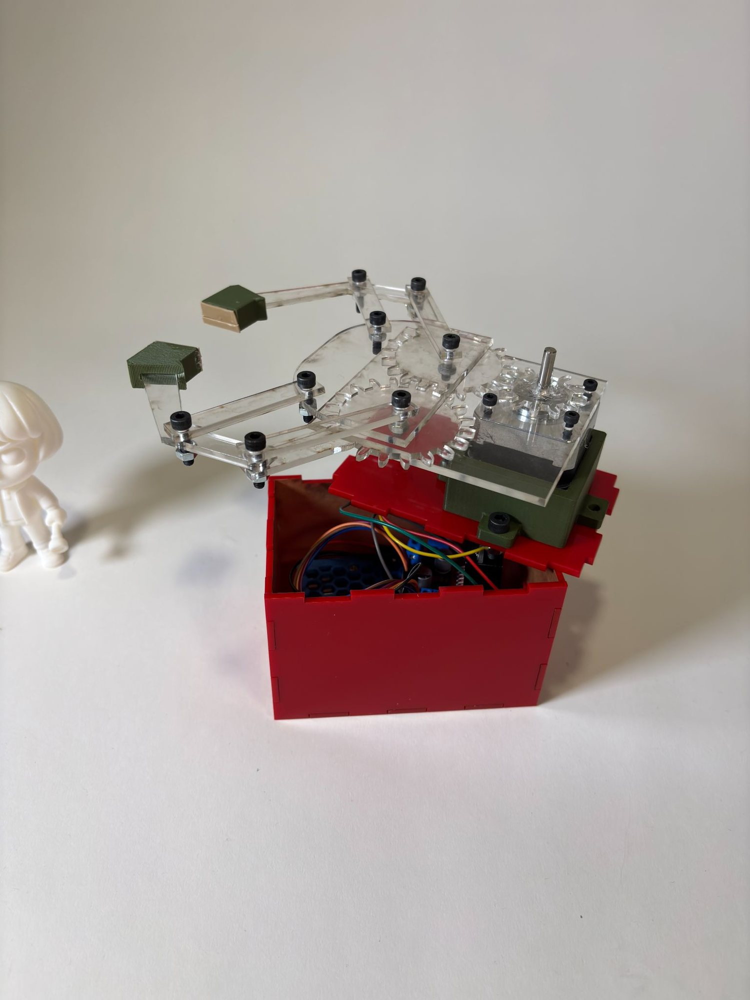
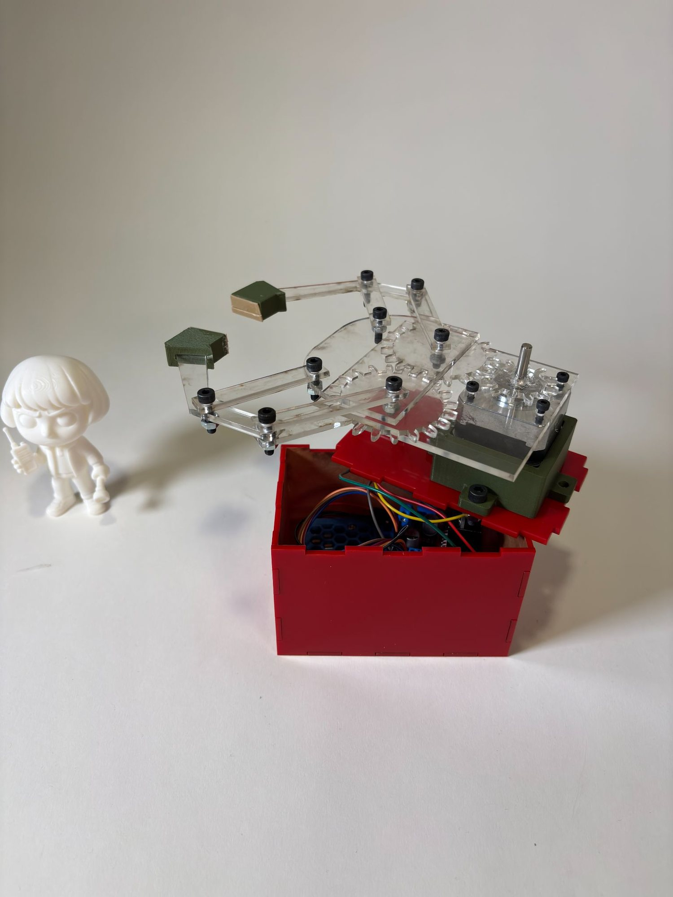
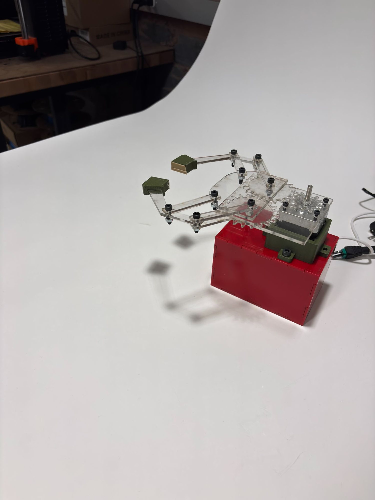

Project analysis
This project involves designing and fabricating a custom mechanical gripper from scratch that uses both linkages and gears for motion transmission.
The gripper is actuated by a stepper motor and must autonomously grasp a figure without any direct human interaction during the gripping process. All interactions are limited to the stepper motor housing, with no components attached directly to the figure. After successfully gripping the figure, the entire system must be transported 2 feet without dropping it while complying with handling constraints.
Grip in use
The video demonstrates the gripper in operation as it autonomously engages and lifts the figure using the gear- and linkage-driven mechanism. It highlights the smooth actuation of the stepper motor, the coordinated motion of the gripper fingers, and the system's ability to securely hold the figure without human intervention. The footage also shows the gripper maintaining a stable grasp while the entire system is moved, verifying that the design meets the project constraints and functional requirements.
How it was built
The project was completed through a combination of mechanical fabrication, electronics integration, and software development. The gripper clamps were 3D printed for precision and custom fit, while the gears and linkage components were laser-cut from durable materials to ensure smooth and reliable motion. On the electronics side, the stepper motor was connected to an H-bridge and controlled via a Raspberry Pi, with custom code written to actuate the gripper automatically. The system was first tested with a simplified prototype to refine the motion, verify grip strength, and troubleshoot any mechanical or electrical issues. Once the prototype performed reliably, the design was implemented in the full system, successfully demonstrating the gripper's ability to autonomously pick up and transport the figure.
View Python code — stepper motor control
# This script moves a stepper motor using LEFT and RIGHT arrow keys.
import RPi.GPIO as GPIO
import time
import curses
GPIO.setmode(GPIO.BOARD)
# Define the GPIO pins for the L298N motor driver
OUT1 = 16
OUT2 = 18
OUT3 = 19
OUT4 = 21
# Set the GPIO pins as output
GPIO.setup(OUT1, GPIO.OUT)
GPIO.setup(OUT2, GPIO.OUT)
GPIO.setup(OUT3, GPIO.OUT)
GPIO.setup(OUT4, GPIO.OUT)
# Step sequence (full-step)
step_sequence = [
[1, 0, 1, 0],
[0, 1, 1, 0],
[0, 1, 0, 1],
[1, 0, 0, 1]
]
step_delay = 0.007
current_step = 0
def move_step(direction):
global current_step
if direction == "close": # Right arrow
current_step = (current_step + 1) % 4
elif direction == "open": # Left arrow
current_step = (current_step - 1) % 4
GPIO.output(OUT1, step_sequence[current_step][0])
GPIO.output(OUT2, step_sequence[current_step][1])
GPIO.output(OUT3, step_sequence[current_step][2])
GPIO.output(OUT4, step_sequence[current_step][3])
time.sleep(step_delay)
def main(stdscr):
stdscr.nodelay(True)
stdscr.keypad(True)
stdscr.addstr(0, 0, "Use LEFT / RIGHT arrows to move motor. Press 'q' to quit.")
try:
while True:
key = stdscr.getch()
if key == curses.KEY_RIGHT:
move_step("open")
elif key == curses.KEY_LEFT:
move_step("close")
elif key == ord('q'):
break
except KeyboardInterrupt:
pass
finally:
GPIO.cleanup()
curses.wrapper(main)Reflection
This project demonstrates hands-on mechanical design and fabrication under strict constraints, with a focus on using gears and linkages to create a functional, stepper-motor-driven gripper. Key takeaways include the importance of iterative design, mechanical reliability, and teamwork when building real-world robotic systems.
A major challenge occurred when the system stopped working while being moved into the red case, caused by two non-functional Raspberry Pi pins. Our group troubleshot the issue collaboratively and resolved it, reinforcing the value of systematic debugging and robust hardware handling.
Through this project, I developed skills in gear design, laser cutting, and 3D printing, and gained my first experience using Onshape for CAD and assemblies. I also strengthened my ability to translate CAD designs into physical prototypes and refine them with testing.
Gallery






